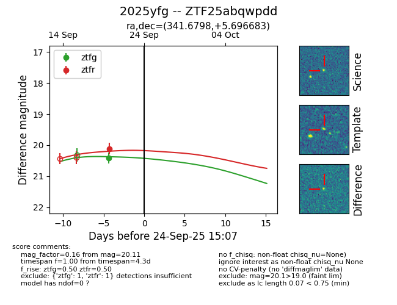

FINK: ZTF25abqwpdd
Lasair: ZTF25abqwpdd
ALeRCE: ZTF25abqwpdd
TNS: 2025yfg
YSE: 2025yfg
ZTF25abqwpdd (ztf,fink)
2025yfg (tns,yse)
equatorial (ra, dec) = (341.6798,+5.69668)
galactic (l, b) = (75.7008,-45.43091)

last ztfg=20.42, ztfr=20.11
1 ztfg, 1 ztfr detections